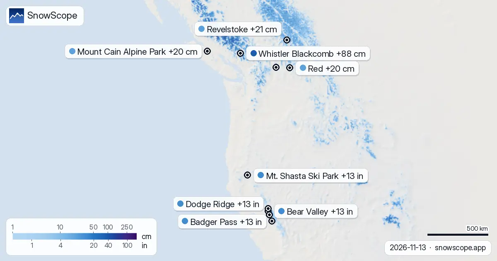

Schneevorhersage: Whistler Blackcomb erwartet bis Montag 88 cm
Whistler Blackcomb in Kanada wird voraussichtlich den meisten Neuschnee weltweit erhalten, mit 88 cm, die bis Montag, den 16. November, erwartet werden. Auch Skigebiete in den französischen Alpen und im Westen der USA werden erhebliche Schneefälle verzeichnen.
Die Live-Schneeprognose für Whistler Blackcomb in der SnowScope-AppSchneehöhen, Pulverschnee-Alarme und 3D-Karte, gratis.
Kanada: Whistler Blackcomb führt beim weltweiten Schneefall
Unser Schneemodell, aktualisiert am Freitag, den 13. November, zeigt, dass Whistler Blackcomb in Westkanada die höchsten Neuschneemengen erhalten wird. In den nächsten 24 Stunden werden schätzungsweise 29 cm erwartet, mit insgesamt 88 cm, die bis Montag, den 16. November, prognostiziert werden. Die Schneefallgrenze wird dort voraussichtlich bei etwa 1.300 m liegen.
Andere kanadische Skigebiete werden ebenfalls frischen Schnee sehen, wenn auch in geringeren Mengen. Revelstoke und Mount Cain Alpine Park werden beide bis Montag voraussichtlich 20 cm erhalten. Red wird ebenfalls 20 cm sehen, während Mt. Baldy Family und Big White voraussichtlich 17 cm bzw. 16 cm erhalten werden.
| # | Skigebiet | Region | +24 h | +72 h | Schneefallgrenze |
|---|---|---|---|---|---|
| 1 | Orcières Merlette | Alpen · Frankreich | 9 cm | 35 cm | 2.000 m |
| 2 | La Grave | Alpen · Frankreich | 7 cm | 33 cm | 2.900 m |
| 3 | Dévoluy | Alpen · Frankreich | 9 cm | 32 cm | 2.100 m |
| 4 | Alpe d'Huez Grand Domaine | Alpen · Frankreich | 6 cm | 31 cm | 2.200 m |
| 5 | Les Orres | Alpen · Frankreich | 10 cm | 30 cm | 2.200 m |
| 6 | Montclar | Alpen · Frankreich | 8 cm | 30 cm | 2.200 m |
| 7 | Les Deux Alpes | Alpen · Frankreich | 6 cm | 30 cm | 2.200 m |
| 8 | Isola 2000 | Alpen · Frankreich | 18 cm | 29 cm | 2.200 m |
| # | Skigebiet | Region | +24 h | +72 h | Schneefallgrenze |
|---|---|---|---|---|---|
| 1 | Bear Valley | US-Westen · USA | 6 in (16 cm) | 13 in (34 cm) | 9.200 ft (2.800 m) |
| 2 | Dodge Ridge | US-Westen · USA | 6 in (16 cm) | 13 in (34 cm) | 9.500 ft (2.900 m) |
| 3 | Badger Pass | US-Westen · USA | 6 in (16 cm) | 13 in (33 cm) | 10.200 ft (3.100 m) |
| 4 | Kirkwood | US-Westen · USA | 6 in (16 cm) | 13 in (32 cm) | 9.800 ft (3.000 m) |
| 5 | Mt. Shasta Ski Park | US-Westen · USA | 2 in (6 cm) | 13 in (32 cm) | 5.200 ft (1.600 m) |
| 6 | Kingvale | US-Westen · USA | 6 in (16 cm) | 12 in (31 cm) | – |
| 7 | China Peak | US-Westen · USA | 8 in (20 cm) | 12 in (30 cm) | 11.200 ft (3.400 m) |
| 8 | Palisades Tahoe Alpine Meadows | US-Westen · USA | 6 in (14 cm) | 12 in (30 cm) | 8.500 ft (2.600 m) |
| # | Skigebiet | Region | +24 h | +72 h | Schneefallgrenze |
|---|---|---|---|---|---|
| 1 | Whistler Blackcomb | Westkanada · Kanada | 29 cm | 88 cm | 1.300 m |
| 2 | Revelstoke | Westkanada · Kanada | 4 cm | 21 cm | 2.300 m |
| 3 | Mount Cain Alpine Park | Westkanada · Kanada | 2 cm | 20 cm | 1.400 m |
| 4 | Red | Westkanada · Kanada | 2 cm | 20 cm | 2.200 m |
| 5 | Mt. Baldy Family | Westkanada · Kanada | 3 cm | 17 cm | 2.000 m |
| 6 | Apex | Westkanada · Kanada | 7 cm | 16 cm | 1.900 m |
| 7 | Big White | Westkanada · Kanada | 4 cm | 16 cm | 2.100 m |
| 8 | Whitewater | Westkanada · Kanada | 1 cm | 16 cm | 2.400 m |

Französische Alpen: Orcières Merlette und La Grave erwarten über 30 cm
In den französischen Alpen wird Orcières Merlette voraussichtlich den meisten Neuschnee erhalten, mit 35 cm, die bis Montag, den 16. November, erwartet werden. Dies beinhaltet 9 cm in den nächsten 24 Stunden. Die Schneefallgrenze für Orcières Merlette wird auf 2.000 m prognostiziert.
La Grave liegt dicht dahinter mit 33 cm, die bis Montag prognostiziert werden, davon 7 cm in den nächsten 24 Stunden. Dévoluy wird ebenfalls voraussichtlich 32 cm erhalten, und Alpe d'Huez Grand Domaine könnte 31 cm sehen. Les Orres und Montclar werden beide bis Montag 30 cm Neuschnee erhalten.
US-Westen: Bear Valley und Dodge Ridge führen
Im Westen der USA werden Bear Valley und Dodge Ridge beide bis Montag, den 16. November, voraussichtlich 34 cm Neuschnee erhalten. Beide Skigebiete werden in den nächsten 24 Stunden voraussichtlich 16 cm erhalten. Die Schneefallgrenze für Bear Valley wird auf 2.800 m prognostiziert.
Badger Pass wird bis Montag voraussichtlich 33 cm erhalten, und Kirkwood wird voraussichtlich 32 cm sehen. China Peak könnte bis Montag 30 cm erhalten, wobei 20 cm davon in den nächsten 24 Stunden fallen.
Prognoseunsicherheit
Diese Zahlen basieren auf unserem Schneemodelllauf vom Freitag, den 13. November. Prognosen können sich ändern, daher solltest du nach Updates suchen. Schnee zu Beginn der Saison kann dünn sein, und Felsen können unter frischem Schnee vorhanden sein.
Tipps für Skifahrer
- Für den tiefsten Neuschnee konzentriere dich auf Whistler Blackcomb in Kanada, das bis Montag voraussichtlich 88 cm erhalten wird.
- In den französischen Alpen sind Orcières Merlette und La Grave gute Optionen, mit über 30 cm, die bis Montag erwartet werden.
- Im Westen der USA werden Bear Valley und Dodge Ridge voraussichtlich den meisten Neuschnee erhalten, etwa 34 cm bis Montag.
- Überprüfe immer den offiziellen Lawinenlagebericht, wenn du vorhast, abseits der Piste zu fahren.
- Denke daran, dass die Bedingungen zu Beginn der Saison bedeuten, dass die Schneehöhen variabel sein können, besonders in tieferen Lagen.
Zu diesen Zahlen
Die Schneehöhen der Skigebiete sind der meiste Schnee in den oberen Hängen laut SnowScope-Schneemodell (etwa 1 km, Lauf vom 13. November); es sind Schätzungen für eine Fläche, keine Messung an einem Punkt. Werte von Messstationen sind Messungen am angegebenen Tag. Prognosen können sich ändern. Lies vor dem Freeriden immer den offiziellen Lawinenlagebericht.
Offizielle Lawinenlageberichte: EAWS (Europe) · avalanche.org (US) · Avalanche Canada
Diesen Bericht zitieren
Für Forschung, Lehre oder Presse: Zahlen und Grafiken sind unter CC BY 4.0 mit dieser Quellenangabe frei nutzbar.
SnowScope (2026), Schneevorhersage: Whistler Blackcomb erwartet bis Montag 88 cm, https://snowscope.app/blog/de/2026/11/where-most-snow-falls-next-72-hours-13-november-2026.html, abgerufen am 2026-11-13
SnowScope (Atlas Labs). (2026, November 13). Schneevorhersage: Whistler Blackcomb erwartet bis Montag 88 cm. SnowScope snow reports. https://snowscope.app/blog/de/2026/11/where-most-snow-falls-next-72-hours-13-november-2026.html
BibTeX
@misc{snowscope2026wheremostsnowfallsnext72,
author = {{SnowScope (Atlas Labs)}},
title = {Schneevorhersage: Whistler Blackcomb erwartet bis Montag 88 cm},
year = {2026},
month = nov,
howpublished = {\url{https://snowscope.app/blog/de/2026/11/where-most-snow-falls-next-72-hours-13-november-2026.html}},
note = {Published 2026-11-13 10:07 UTC; accessed 2026-11-13}
}· CC BY 4.0 · Methoden, Daten und Werkzeuge →
Whistler Blackcomb: Schnee und Temperatur nach Höhe, dieser Winter vs letzter (Werkzeuge) →
Whistler Blackcomb folgen
Gratis: eine Nachricht, wenn Neuschnee kommt, und jeden Morgen die Vorhersage.
Weitere Schneeberichte

Die heutige Tabelle sortiert die Skigebiete Europas, Marokkos und Nordamerikas nach prognostiziertem Neuschnee für die nächsten 24 Stunden und bis …

Wie viel Schnee gewinnen die Berge? Unsere Tabelle zeigt die Skigebiete mit dem meisten prognostizierten Neuschnee für die nächsten 24 Stunden und …

Whistler Blackcomb, 116 cm Schnee: die heutige Höhe in den oberen Hängen (12. November). 162 cm: So viel Schnee liegt heute in den oberen Hängen von …